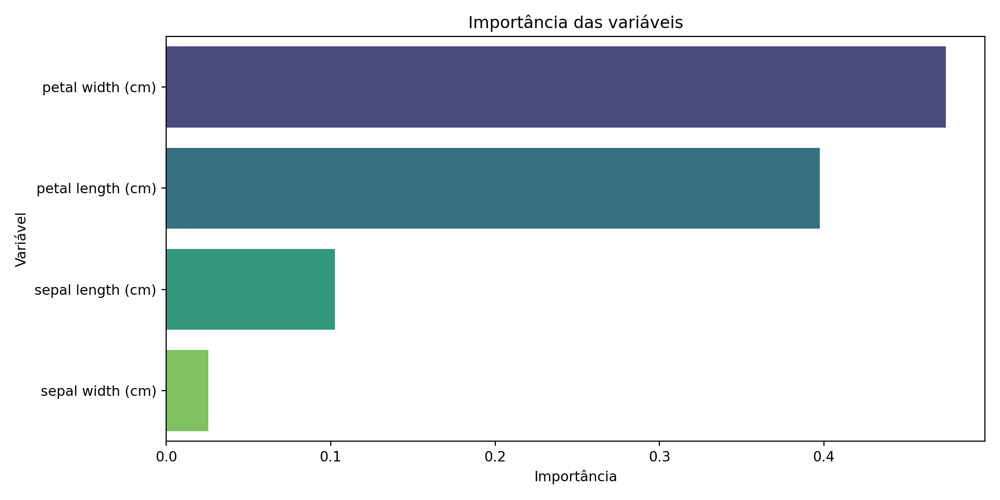

A capacidade de um sistema computacional simular habilidades cognitivas humanas
Visão Computacional
Processamento de Linguagem Natural
Robótica
Machine Learning
O que é Inteligência Artificial (IA)?
O que é Machine Learning?
Um subcampo da IA que permite que sistemas aprendam a partir de dados, sem serem explicitamente programados
O que é Machine Learning?
📊
Do ponto de vista da Estatística, Machine Learning (ML) é uma extensão e uma aplicação computacional de métodos estatísticos com um forte foco em predição e descoberta de padrões em dados, muitas vezes em larga escala e com menor ênfase na inferência causal tradicional.
💻
Do ponto de vista da Ciência da Computação, Machine Learning (ML) é um campo que se concentra no desenvolvimento de algoritmos e sistemas computacionais que podem aprender a partir de dados para realizar tarefas sem serem explicitamente programados para cada uma delas.
O que é Machine Learning?
As duas culturas…
Data Modeling Culture: Domina a comunidade estatística. Nela se assume que o modelo utilizado é correto. Testar suposições é fundamental. Foco em inferência e na interpretação dos parâmetros.
Algorithmic Modeling Culture: Domina a comunidade de machine learning. Nela não se assume que o modelo utilizado é correto; o modelo é utilizado apenas para criar bons algoritmos preditivos. Podemos interpretar os resultados, mas esse, em geral, não é o foco.
Exemplos práticos de aplicações de ML no dia a dia.
Sistemas de recomendação (Netflix, Amazon).
Filtros de spam (Gmail).
Carros autônomos (Tesla).
Diagnóstico médico (detecção de tumores).
Reconhecimento facial (smartphones).
Como as Máquinas Aprendem?
Componentes do aprendizado de máquina
https://vas3k.com/blog/machine_learning/
Dados
Características/Features
Algoritmos
O mapa da aprendizagem de máquina
👉 Nunca há uma única maneira de resolver um problema no mundo do aprendizado de máquina.
👉 Sempre existem vários algoritmos que se encaixam, e você deve escolher qual deles se encaixa melhor.
👉 Tudo pode ser resolvido com uma rede neural? Sim, mas quem pagará por todo esse custo?
O mapa da aprendizagem de máquina
Aprendizado de Máquina Clássico
Aprendizado de Máquina Clássico
👉 O aprendizado de máquina clássico é frequentemente dividido em duas categorias – Aprendizado Supervisionado e Não Supervisionado.
Aprendizado Supervisionado: usa um algoritmo que precisa de exemplos rotulados para desempenhar suas tarefas.
Aprendizado Não-supervisionado: os dados não são rotulados, não há professor e a máquina está tentando encontrar padrões por conta própria.
Aprendizado Supervisionado
💡 Claramente, a máquina aprenderá mais rápido com um professor. Por isso, é mais comum encontrarmos esse caso nas tarefas da vida real.
Existem dois tipos de tarefas:
classificação: predição de categoria de um objeto e
regressão: predição de um ponto específico em um eixo numérico.
Tarefa de classificação
Os algoritmos de classificação dividem os objetos com base em um dos atributos conhecidos de antemão.
Se a variável resposta é quantitativa, temos um problema de análise de regressão
Usados nos dias de hoje para:
Previsões do preço das ações;
Análise de demanda e volume de vendas;
Diagnóstico médico.
Tarefa de regressão
Algoritmos populares: Decision Tree, Regressão Linear e Regressão Polinomial, K-Nearest Neighbours, Support Vector Machine.
Avaliação de modelos
💡 Independente do modelo escolhido, é importante saber se um modelo de machine learning está realmente funcionando. É aí que entra a avaliação de modelos!
A avaliação de modelos de machine learning é como um detetive investigando um caso.
Avaliação de modelos
Avaliação de modelos
🤔 O nosso modelo é um herói ou um impostor?
Matriz de confusão
Permite a visualização do desempenho de um algoritmo de classificação
Matriz de confusão
VP (Verdadeiro Positivo): objeto da classe positiva classificado como positivo
VN (Verdadeiro Negativo): objeto da classe negativa classificado como negativo
FP (Falso Positivo): objeto da classe negativa classificado como positivo. Também conhecido como alarme falso ou Erro tipo 1
FN (Falso Negativo): objeto da classe positiva classificado como negativo. É também conhecido como Erro Tipo 2
Matriz de confusão
Exemplo: Sejam as seguintes matrizes de confusão, obtidas de dois classificadores quaisquer.
Métricas derivadas da matriz de confusão
Acurácia
Mede a proporção de previsões corretas do modelo em relação ao total de previsões feitas.
É como sua nota em uma prova!
Acurácia
A Taxa de Erro Aparente do classificador é dada por
\[TEA = 1 - ACC\]
Acurácia
Acurácia
Mas será que a acurácia é suficiente para avaliar nossos modelos de forma precisa?
Às vezes, uma única métrica não é capaz de nos contar toda a história.
Precisão
Ela nos diz quantas das previsões positivas foram realmente corretas.
Precisão
Porcentagem de verdadeiros positivos dentre todos os objetos classificados como positivos
Precisão
Sensibilidade
Mede a proporção de casos positivos reais que foram encontrados pelo modelo
Sensibilidade
Também conhecida por Recall ou Taxa de Verdadeiros Positivos (TVP)
Sensibilidade
Especificidade
Ajuda a identificar a capacidade do modelo em reconhecer corretamente as amostras negativas
Especificidade
Também conhecida por Taxa de Verdadeiros Negativos (TVN)
Especificidade
Taxa de Falso Positivo
Ela mede a proporção de amostras negativas classificadas como positivas pelo modelo
Taxa de Falso Positivo
Taxa de Falso Positivo
\(F_1\)-Score
Ele leva em consideração tanto precisão quanto a sensibilidade, dando uma medida balanceada do desempenho do modelo.
O \(F_1\)-Score é como um equilibrista em uma corda bamba.
Curva ROC
A Curva ROC é como um mapa que nos guia pela sensibilidade e pelos falsos positivos do modelo em diferentes configurações.
Ela nos mostra o quão bem nosso modelo pode distinguir entre as classes.
Curva ROC
Representa o número de vezes que o classificador acertou a predição contra o número de vezes que o classificador errou a predição
A área sob a curva ROC, conhecida como AUC-ROC, é uma métrica comumente utilizada para avaliar o desempenho global do modelo.
Quanto maior a AUC-ROC, melhor é o desempenho do modelo em discriminar corretamente as classes.
E como avaliar modelos de predição?
Avaliação de modelos de predição
Seja \(d_j\), \(j = 1,\cdots, n\), a resposta desejada para o objeto \(j\) e \(y_j\) a resposta estimada (predita) do algoritmo, obtida a partir de uma entrada \(\mathbf{x_j}\) apresentada ao algoritmo.
Seja então, \(e_j = d_j - y_j\) a diferença entre o valor observado e o valor predito para o objeto \(j\).
Podemos definir as seguintes métricas para avaliação de modelos preditivos.
Ponto forte: Penaliza fortemente erros maiores devido ao termo quadrático. Isso significa que o MSE é sensível a outliers (valores discrepantes).
Ponto fraco: Como eleva os erros ao quadrado, a unidade da métrica resultante não é a mesma da variável original, o que dificulta a interpretação direta da magnitude do erro.
Avaliação de modelos de predição
Raiz do Erro Quadrático Médio (RMSE - Root Mean Squared Error):
Ponto forte: Mantém a propriedade de penalizar erros maiores, mas retorna o erro na mesma unidade da variável original, facilitando a interpretação. É uma métrica amplamente utilizada.
Ponto fraco: Ainda é sensível a outliers, pois se baseia no MSE.
Ponto forte: É mais robusto a outliers em comparação com MSE e RMSE, pois não eleva os erros ao quadrado. Fornece uma medida direta da magnitude média dos erros na unidade original da variável.
Ponto fraco: Não penaliza erros maiores de forma tão intensa quanto o MSE e RMSE. Pode não ser ideal se erros grandes tiverem um impacto significativamente maior no seu problema.
Avaliação de modelos de predição
Erro Percentual Absoluto Médio (MAPE - Mean Absolute Percentage Error):
Ponto forte: É fácil de interpretar, pois expressa o erro em termos percentuais. Isso pode ser útil para comparar o desempenho de modelos em diferentes escalas.
Ponto fraco: Não é definido quando os valores reais são zero. Além disso, pode ser assimétrico, penalizando mais os erros de previsão abaixo do valor real do que acima. Pode ser instável se houver valores reais muito pequenos.
Avaliação de modelos de predição
🤔 Qual a melhor métrica?
Em resumo:
Se você se preocupa muito com grandes erros: MSE e RMSE são boas opções.
Se você quer uma métrica robusta a outliers: MAE é uma boa escolha.
Se a interpretabilidade em termos percentuais é importante (com cuidado com valores zero/pequenos): MAPE pode ser útil.
💡 O ideal é analisar todas as métricas em conjunto, considerando o contexto do seu problema e utilizando validação cruzada.
Qual o melhor modelo?
👉 Suponha que tenhamos dados simulados utilizando o seguinte modelo:
Qual o melhor modelo?
👉 Podemos estimar diversos modelos \(y\) que predizem o verdadeiro valor de \(d\)
Qual o melhor modelo?
👉 Nosso interesse está em treinar o modelo e avaliar a sua capacidade de generalização
Validação holdout
👉Dados originais: treinamento e teste
👉Dados de treinamento: treinamento e validação
Validação holdout
Exemplo: Vamos avaliar a relação entre Frequência Cardíaca e Idade de 270 pacientes
Validação holdout
🤔 Qual o melhor modelo nesse caso?
Validação holdout
👉 70% da base para treino e 30% para validação
Validação cruzada k-fold
👉Dados de treinamento:\(k\) partes iguais. Treina com \(k-1\) partes, e valida com uma
Validação cruzada k-fold
Trade-off bias-variância
Imagine que você está tentando acertar um alvo com dardos. Seus arremessos podem ser agrupados de três maneiras diferentes:
Grupo de alto viés (bias): Seus arremessos são consistentemente agrupados longe do alvo, mas próximos uns dos outros. Isso indica um alto viés, pois você está fazendo arremessos incorretos, mas de forma consistente.
Grupo de alta variância: Seus arremessos estão espalhados por toda a área, longe do alvo e uns dos outros. Isso indica alta variância, pois seus arremessos são inconsistentes e imprevisíveis.
Grupo equilibrado: Seus arremessos estão agrupados próximo ao alvo e também estão próximos uns dos outros. Isso é o equilíbrio entre viés e variância, onde você está acertando o alvo de forma consistente e precisa.
Trade-off bias-variância
Trade-off bias-variância
Queremos construir modelos que não apenas performem bem nos dados de treinamento, mas que também façam previsões precisas em dados novos e não vistos.
O erro total de um modelo preditivo em dados não vistos pode ser decomposto em três componentes principais, ou seja,
Bias (Viés): Erro devido a suposições simplificadoras no modelo. Um modelo com alto bias tende a subajustar (underfit) os dados de treinamento, perdendo relações importantes entre as variáveis.
Variância: Sensibilidade do modelo a pequenas variações nos dados de treinamento. Um modelo com alta variância tende a sobreajustar (overfit) os dados de treinamento, aprendendo até mesmo o ruído presente neles.
Erro Irredutível: Ruído inerente aos dados que não pode ser reduzido por nenhum modelo.
O Problema do Subajuste (Underfitting)
Modelos com alto bias fazem suposições fortes sobre a forma da função que mapeia as entradas para as saídas. São tipicamente modelos mais simples, com poucos parâmetros.
Consequências:
Desempenho ruim tanto nos dados de treinamento quanto nos dados de teste.
Incapacidade de capturar a complexidade real dos dados.
O Problema do Sobreajuste (Overfitting)
Modelos com alta variância aprendem os dados de treinamento muito bem, incluindo o ruído presente neles. São tipicamente modelos mais complexos, com muitos parâmetros.
Consequências:
Excelente desempenho nos dados de treinamento.
Desempenho significativamente pior em dados de teste não vistos. O modelo “decorou” os dados de treinamento em vez de aprender padrões gerais.
Underfitting e Overfitting
Bias vs. Variância
Voltemos ao nosso modelo simulado:
Bias vs. Variância
👉 Vamos ajustar um modelo polinomial de grau 2
Bias vs. Variância
Bias vs. Variância
👉 Vamos ajustar um modelo polinomial de grau 10
Bias vs. Variância
O Tradeoff - A Balança Delicada
👉Bias e variância estão inversamente relacionados. Tentar reduzir um geralmente aumenta o outro.
Modelos simples tendem a ter alto bias e baixa variância.
Modelos complexos tendem a ter baixo bias e alta variância.
💡 O objetivo é encontrar um modelo com um bom equilíbrio entre bias e variância, que minimize o erro de generalização.
O Tradeoff - A Balança Delicada
Como Lidar com o Tradeoff?
Seleção de Modelos: Experimentar diferentes tipos de modelos (lineares, não lineares, árvores, redes neurais, etc.).
Ajuste de Hiperparâmetros: Controlar a complexidade do modelo ajustando seus hiperparâmetros (ex: profundidade máxima de uma árvore, número de neurônios em uma camada).
Validação Cruzada: Usar técnicas de validação cruzada para estimar o desempenho do modelo em dados não vistos de forma mais robusta e ajudar a identificar overfitting.
Engenharia de Features: Criar features mais informativas pode reduzir o bias.
Como Lidar com o Tradeoff?
Regularização: Técnicas como L1 e L2 adicionam uma penalidade à complexidade do modelo, ajudando a reduzir a variância (overfitting).
Mais Dados: Em alguns casos, aumentar a quantidade de dados de treinamento pode ajudar a reduzir a variância.
Ensemble Methods: Combinar múltiplos modelos (ex: Random Forest, Gradient Boosting) pode ajudar a reduzir tanto o bias quanto a variância.
Algoritmos de predição
Algoritmos de predição
Algoritmos mais comuns usados para problemas de predição:
K-Nearest Neighbors (KNN)
Naive Bayes
Árvores de decisão
Random Forests
Máquinas de Vetores de Suporte (SVM)
Redes Neurais Artificiais (ANN)
K-Nearest Neighbors (KNN)
O KNN é um algoritmo de aprendizado supervisionado de classificação e regressão, que usa a proximidade dos objetos para classificar novas instâncias.
É um dos algoritmos mais simples e intuitivos de aprendizado de máquina. Utiliza a ideia do vizinho mais próximo, o que significa que ele determina a classe de uma instância com base nas classes de seus vizinhos mais próximos.
Em outras palavras, se a maioria dos vizinhos mais próximos de uma instância pertence a uma classe específica, então a instância também é classificada como pertencente a essa classe.
Algoritmo KNN
Algoritmo KNN
KNN é usado para problemas de classificação e regressão.
Em problemas de classificação, a classe mais comum entre os K vizinhos mais próximos é escolhida como a classe da nova instância.
Em problemas de regressão, a média ou mediana dos valores alvo dos K vizinhos mais próximos é escolhida como o valor alvo da nova instância.
A escolha do valor de K
O valor de K é um parâmetro importante em KNN. Ele determina o número de vizinhos mais próximos que são usados para classificar uma nova instância.
Um valor de K pequeno pode levar a um modelo muito sensível ao ruído nos dados (overfitting), enquanto um valor grande de K pode levar a uma perda de detalhes importantes nos dados (underfitting).
A escolha do valor K ideal é frequentemente realizada por meio de técnicas de validação cruzada.
Se \(\lambda = 1\), temos a chamada métrica de Manhattan. É também conhecida como city block.
Se \(\lambda = 2\), temos a distância euclidiana.
A métrica de Minkowski é menos afetada pela presença de valores discrepantes na amostra do que a distância Euclidiana.
Se os dados forem textuais: usar cosseno
Vantagens e Desvantagens
👍
Simples de entender e implementar.
Não faz muitas suposições sobre os dados (não paramétrico).
Útil para dados complexos e não lineares.
Pode ser usado tanto para classificação quanto para regressão.
Vantagens e Desvantagens
👎
Computacionalmente caro para grandes conjuntos de dados (cálculo de distância para todos os pontos).
Sensível à escala dos dados (variáveis com escalas maiores podem dominar o cálculo da distância) - importância da normalização/padronização.
Desempenho pode degradar em dados com muitas dimensões (maldição da dimensionalidade).
Escolha do valor de k pode ser crucial e não é trivial.
Pré-processamento de Dados para KNN
💻
Escalonamento de features: Padronização (média zero, desvio padrão um) ou normalização (escala entre 0 e 1) para garantir que todas as features contribuam igualmente para o cálculo da distância.
Tratamento de valores ausentes: Imputação ou remoção.
Seleção de features: Reduzir a dimensionalidade para melhorar o desempenho.
In a Jupyter environment, please rerun this cell to show the HTML representation or trust the notebook. On GitHub, the HTML representation is unable to render, please try loading this page with nbviewer.org.
In a Jupyter environment, please rerun this cell to show the HTML representation or trust the notebook. On GitHub, the HTML representation is unable to render, please try loading this page with nbviewer.org.
Baseia-se no Teorema de Bayes, que afirma que a probabilidade de um evento ocorrer dado que outro evento já ocorreu é proporcional à probabilidade deste último evento ocorrer dado o primeiro.
A “ingenuidade” (Naive): assume que os preditores são independentes entre si, dado o valor da classe.
Aplicado principalmente em problemas de classificação, especialmente com dados categóricos ou textuais.
👉O objetivo é encontrar a classe com a maior probabilidade posterior.
O Teorema de Bayes Aplicado ao Naive Bayes
Devido a essa suposição de independência condicional, a probabilidade das características conjuntas dado a classe pode ser simplificada para o produto das probabilidades de cada característica individual dado a classe:
Observação importante: O denominador \(P(\text{Características})\) é constante para todas as classes, então podemos ignorá-lo para fins de comparação
Tipos de Naive Bayes
Gaussian Naive Bayes: Para características contínuas. Assume que as características são distribuídas de acordo com uma distribuição Gaussiana (Normal).
Multinomial Naive Bayes: Ideal para contagens de ocorrências (ex: contagem de palavras em documentos, usado em classificação de texto).
Bernoulli Naive Bayes: Adequado para dados binários (presença/ausência de uma característica).
Vantagens e Desvantagens
👍
Simplicidade: Fácil de entender e implementar.
Eficiência: Muito rápido para treinar e prever, especialmente em grandes conjuntos de dados.
Bom desempenho: Surpreendentemente eficaz em muitos problemas reais, mesmo com a suposição de independência.
Processamento de texto: Excelente para classificação de documentos e filtragem de spam.
Não requer muitos dados: Pode funcionar bem com conjuntos de dados menores.
Vantagens e Desvantagens
👎
Suposição de independência: A suposição de independência entre as características raramente é verdadeira no mundo real, o que pode limitar a precisão.
Problema de “zero frequência”: Se uma categoria de característica não aparecer no conjunto de treinamento para uma determinada classe, a probabilidade para essa característica será zero, o que leva a uma probabilidade posterior zero. (para resolver: Laplace Smoothing)
Estimativa de Probabilidades: Pode ter um desempenho ruim quando há características numéricas com distribuições complexas (a suposição Gaussiana pode não se aplicar).
Pré-processamento de Dados para Naive Bayes
💻
Dados Categóricos: Transformar para formato numérico (One-Hot Encoding ou Label Encoding, dependendo do tipo de NB).
Dados Numéricos:
GaussianNB: Assumir distribuição normal. Normalização/padronização pode ajudar, mas não é estritamente necessária como em KNN, já que não se baseia em distância.
Discretização: Converter dados numéricos em categóricos (bins) para usar Multinomial ou Bernoulli NB.
Tratamento de Valores Ausentes: Imputação ou remoção.
Textuais: Tokenização, remoção de stop words, stemização/lema, TF-IDF, CountVectorizer.
import pandas as pdfrom sklearn.model_selection import train_test_splitfrom sklearn.naive_bayes import GaussianNB # Para dados contínuos como Irisfrom sklearn.metrics import accuracy_score, confusion_matrixfrom sklearn.datasets import load_iris # Para carregar o dataset Irisiris = load_iris()X = pd.DataFrame(iris.data, columns=iris.feature_names)y = pd.Series(iris.target_names[iris.target], name='species') # Mapear números para nomes de espécies# Split dos dados em treino e testeX_train, X_test, y_train, y_test = train_test_split(X, y, test_size=0.3, random_state=12345)model_nb = GaussianNB()model_nb.fit(X_train, y_train)
GaussianNB()
In a Jupyter environment, please rerun this cell to show the HTML representation or trust the notebook. On GitHub, the HTML representation is unable to render, please try loading this page with nbviewer.org.
Uma árvore de decisão é um modelo de aprendizado de máquina que utiliza uma estrutura de árvore para tomar decisões com base em condições nos dados de entrada.
Essa estrutura hierárquica consiste em nós que representam testes sobre atributos e arestas que conectam os nós, indicando os resultados desses testes.
Cada nó interno da árvore representa um teste em um atributo específico, enquanto as folhas representam as classes ou valores de saída.
Árvores de decisão
Ao percorrer a árvore da raiz até uma folha, os dados de entrada são avaliados de acordo com os testes em cada nó, seguindo o caminho apropriado até alcançar uma folha, onde é tomada a decisão final.
Principais Algoritmos
ID3 (Iterative Dichotomiser 3)
É um dos primeiros algoritmos de árvore de decisão e utiliza o ganho de informação como critério para selecionar a melhor divisão em cada nó. No entanto, o ID3 não lida diretamente com atributos numéricos.
Favorece características com muitos valores distintos.
Principais Algoritmos
C4.5
É uma extensão do ID3 e possui melhorias, incluindo a capacidade de lidar com atributos numéricos e valores ausentes. Além disso, o C4.5 utiliza a razão de ganho como métrica de seleção de atributos, em vez do ganho de informação utilizado pelo ID3.
Corrige o viés em relação a características com muitos valores.
Principais Algoritmos
CART (Classification and Regression Trees)
Pode ser usado tanto para classificação quanto para regressão.
Para classificação, usa o índice de Gini como critério de divisão.
Gera árvores binárias (cada nó tem exatamente dois filhos).
Ele busca minimizar a impureza nos nós da árvore.
Principais Algoritmos
CART (Classification and Regression Trees)
Para regressão, busca dividir os dados de forma a minimizar o erro quadrático médio (MSE) ou o desvio absoluto médio (MAE) nos nós folha.
Processo de preparação de um modelo de Árvore de Decisão
Critérios de Divisão para Classificação
O objetivo dos critérios de divisão é encontrar a melhor característica para separar os dados em subconjuntos mais “puros” em relação à variável alvo (classe).
Critérios de Divisão para Classificação
Entropia
A entropia é uma medida de impureza ou aleatoriedade dos dados em um algoritmo de árvore de decisão. Ela é utilizada para avaliar o quão homogêneos ou heterogêneos são os exemplos de uma determinada classe em um conjunto de dados.
É calculada a partir da distribuição das classes no conjunto de dados. Quanto maior a entropia, maior a incerteza sobre a classe de um exemplo. Quanto menor a entropia, mais homogêneos são os exemplos em relação à classe.
Critérios de Divisão para Classificação
Entropia
\[ \text{E(S)} = \sum_{i=1}^c -p_i\log_2 p_i\]
em que \(p_i\) é a proporção de exemplos na classe \(i\) da amostra de treinamento S.
Critérios de Divisão para Classificação
Ganho de Informação (G)
O ganho de informação é uma métrica utilizada para medir a relevância de um atributo na divisão dos dados. Ele indica a quantidade de informação que um atributo fornece sobre a classe ou variável de saída.
Mede a redução na entropia após a divisão do conjunto de dados por uma característica.
O ID3 escolhe a característica com o maior ganho de informação.
Critérios de Divisão para Classificação
Ganho de Informação (G)
\[ \text{G}(S, A) = \text{E}(S) - \text{E}(S,A)\]
em que \(E(S,A) = \sum_{v\in \text{valores de } A} \dfrac{|S_v|}{|S|} \times \text{E}(S_v)\) é a entropia do atributo A.
Critérios de Divisão para Classificação
Razão de ganho
Também conhecida como gain ratio, é uma métrica utilizada para selecionar os melhores atributos de divisão, levando em consideração o viés por atributos com muitos valores possíveis.
Enquanto o ganho de informação mede a redução da entropia dos dados após a divisão com base em um atributo, a razão de ganho ajusta esse valor, levando em consideração o número de valores distintos do atributo.
Essa correção é importante para evitar que atributos com muitos valores possíveis tenham vantagem sobre atributos com menos valores.
Critérios de Divisão para Classificação
Razão de ganho
\[ \text{Gain ratio}(S, A) = \dfrac{G(S, A)}{E(S, A)}\]
Critérios de Divisão para Classificação
Índice de Gini
O índice de Gini é outra medida de impureza utilizada para avaliar a heterogeneidade dos dados em relação à classe ou variável de saída.
Medida da probabilidade de uma amostra ser classificada incorretamente se fosse aleatoriamente rotulada de acordo com a distribuição das classes no subconjunto.
Um valor menor indica maior pureza.
Usado pelo CART para classificação.
Critérios de Divisão para Classificação
Índice de Gini
\[ \text{Gini}(S) = 1 - \sum_{i=1}^c p_i^2\] em que \(p_i\) é a proporção de exemplos na classe \(i\) da amostra de treinamento S.
O CART busca a divisão que resulta na maior redução no índice de Gini.
O índice de Gini varia de 0 a 1, sendo 0 quando todos os exemplos pertencem à mesma classe (alta pureza) e 1 quando os exemplos estão igualmente distribuídos entre as classes (alta impureza).
Critérios de Divisão para Regressão
O objetivo é dividir os dados de forma a minimizar a variabilidade da variável alvo dentro de cada nó folha.
Critérios de Divisão para Regressão
Redução do Erro Quadrático Médio (MSE):
O CART para regressão geralmente busca a divisão que maximiza a redução no MSE.
Calcula-se o MSE no nó pai e o MSE ponderado nos nós filhos após a divisão. A divisão que proporciona a maior redução é escolhida.
Escolhemos o atributo com maior ganho de informação como nó de decisão. No nosso caso, o atributo Idade. A partir daí, dividimos o conjunto de dados a partir das categorias da variável idade e repetimos o mesmo processo em todos os ramos.
Um ramo com entropia de 0 é um nó folha. Um ramo com entropia maior que 0 precisa de mais divisão.
import pandas as pdfrom sklearn.model_selection import train_test_splitfrom sklearn.tree import DecisionTreeClassifierfrom sklearn.metrics import accuracy_score, classification_report, confusion_matrixfrom sklearn.datasets import load_irisiris = load_iris()X = pd.DataFrame(iris.data, columns=iris.feature_names)y = pd.Series(iris.target_names[iris.target], name='species') # Mapear números para nomes de espécies# Split dos dados em treino e testeX_train, X_test, y_train, y_test = train_test_split(X, y, test_size=0.3, random_state=12345)tree = DecisionTreeClassifier(random_state=12345)tree.fit(X_train, y_train)
DecisionTreeClassifier(random_state=12345)
In a Jupyter environment, please rerun this cell to show the HTML representation or trust the notebook. On GitHub, the HTML representation is unable to render, please try loading this page with nbviewer.org.
In a Jupyter environment, please rerun this cell to show the HTML representation or trust the notebook. On GitHub, the HTML representation is unable to render, please try loading this page with nbviewer.org.
Random Forests é um algoritmo de aprendizado de máquina que combina várias árvores de decisão independentes para realizar tarefas de classificação ou regressão.
Ele pertence à categoria de métodos ensemble, que buscam melhorar a precisão e robustez das predições combinando diferentes modelos para se obter um único resultado.
Random Forests
Utiliza bagging (bootstrap aggregation) para criar múltiplas árvores e combinar suas previsões.
Construção de um Random Forests
Amostras são geradas com substituição (bootstrap)
Para cada amostra, os dados são divididos utilizando os atributos que maximizem a pureza dos nós
Critérios de divisão: Gini Index, Entropia, Ganho de Informação, etc.
A cada divisão da árvore, uma amostra aleatória de variáveis é usada
Construção recursiva até atingir critérios de parada (profundidade máxima, pureza mínima)
Previsão final: Cada árvore possui um peso igual na votação final
Classificação: maioria dos votos
Regressão: média das previsões
Construção de um Random Forests
Construção de um Random Forests
Qual a classe predita?
Pela regra da maioria: classe 1
Hiperparâmetros principais
n_estimators / ntree: número de árvores na floresta
max_features / mtry: número de variáveis usadas por divisão
max_depth: profundidade máxima das árvores
min_samples_split: mínimo de amostras para uma divisão
Vantagens e Desvantagens
👍
Trata efetivamente problemas de overfitting
Lida bem com ruídos, dados ausentes e valores discrepantes
Lida com classificações multiclasses
Pouco ajuste de parâmetros
Capaz de lidar com atributos de diferentes tipos (numéricos, categóricos)
Reduz a variância e melhora a precisão em comparação com uma única árvore
In a Jupyter environment, please rerun this cell to show the HTML representation or trust the notebook. On GitHub, the HTML representation is unable to render, please try loading this page with nbviewer.org.
In a Jupyter environment, please rerun this cell to show the HTML representation or trust the notebook. On GitHub, the HTML representation is unable to render, please try loading this page with nbviewer.org.
import matplotlib.pyplot as pltimport seaborn as snsimport pandas as pd# Criar DataFrame com variáveis e importânciasfeat_imp = pd.DataFrame({"Variável": iris.feature_names,"Importância": rf_model.feature_importances_})# Ordenar pela importânciafeat_imp = feat_imp.sort_values(by="Importância", ascending=False)# Plotar gráfico ordenadosns.barplot(x="Importância", y="Variável", data=feat_imp, palette="viridis")plt.title("Importância das variáveis")plt.tight_layout()plt.show()

Support Vector Machine (SVM)
Algoritmo supervisionado usado para classificação e regressão.
Busca uma fronteira ótima (hiperplano) que separa as classes com a maior margem possível.
Depende de poucos pontos críticos: os vetores de suporte.
Pode trabalhar com dados não linearmente separáveis através da técnica do kernel trick.
Por que aprender SVM?
É um dos algoritmos mais eficazes para problemas de classificação com fronteiras complexas.
Funciona bem em espaços de alta dimensão.
Utiliza o conceito de margem máxima, promovendo boa generalização.
Amplamente utilizado em áreas como bioinformática, finanças, reconhecimento de padrões.
Princípio básico
O objetivo do SVM é encontrar um hiperplano de separação ótimo que maximize a margem entre as classes.
Para problemas de classificação binária, um hiperplano de separação é uma superfície que divide o espaço de características em duas regiões, uma para cada classe. Neste caso, esse hiperplano é uma reta!
Em problemas multiclasse, pode ser um plano ou uma superfície mais complexa.
Hiperplano de Separação
Temos aqui 4 hiperplanos (A, B, C e D). Qual o melhor?
Conceitos de vetores de suporte e Margem Máxima
Os vetores de suporte são os pontos de dados mais próximos ao hiperplano de separação. Eles são fundamentais para o SVM, pois definem a posição do hiperplano e a margem.
A margem é a distância entre o hiperplano de separação e os vetores de suporte mais próximos. O objetivo do SVM é maximizar a margem, pois isso aumenta a capacidade de generalização do modelo.
Conceitos de vetores de suporte e Margem Máxima
Margem = \(d_1 + d_2\)
👉 Para encontrar o hiperplano ótimo, caímos em um problema de otimização com restrição, que pode ser resolvido utilizando a técnica dos Multiplicadores de Lagrange!
Kernel Trick: separando o inseparável
Mas e se tivermos problemas não linearmente separáveis?
Kernel Trick: separando o inseparável
O SVM é um algoritmo que inicialmente trabalha com dados linearmente separáveis. No entanto, muitas vezes encontramos conjuntos de dados que não podem ser separados por um hiperplano linear. É aí que entra o Kernel Trick.
O Kernel Trick (Truque do Kernel) nos permite mapear os dados para um espaço de características de dimensão superior, onde se tornam linearmente separáveis.
Isso é feito através de uma função chamada kernel, que calcula o produto interno entre dois vetores nesse espaço de características.
Kernel Trick: separando o inseparável
Kernel Trick: separando o inseparável
👉 Exemplos comuns:
Linear
Polinomial
Radial Basis Function (RBF ou Gaussiano)
Sigmoide
Escolha do kernel
A escolha do kernel adequado é importante para obter um bom desempenho do SVM. É necessário analisar as características dos dados e testar diferentes kernels para encontrar o que melhor se adapta ao problema em questão
O uso do Kernel Trick pode melhorar o desempenho do SVM ao permitir que ele modele relações não lineares nos dados. No entanto, é preciso ter cuidado para evitar o overfitting, garantindo que o modelo generalize bem para dados não vistos.
SVM para problemas multiclasse
O SVM como definido funciona para duas classes. O que fazemos então se tivermos mais de duas classes?
One-vs-One (OVO)
Nessa abordagem, é criado um classificador SVM para cada par de classes possível.
Cada classificador é usado para classificar uma instância de entrada e a classe com mais votos é selecionada como a classe final.
SVM para problemas multiclasse
One-vs-All (OVA)
Essa abordagem consiste em treinar um classificador SVM para cada classe, onde cada classificador é treinado para distinguir uma classe específica das demais classes combinadas.
Durante a fase de teste, cada classificador é usado para classificar uma instância de entrada e a classe com a maior probabilidade é selecionada como a classe final.
import pandas as pdfrom sklearn.model_selection import train_test_splitfrom sklearn.svm import SVCfrom sklearn.metrics import accuracy_score, classification_report, confusion_matrixfrom sklearn.datasets import load_irisiris = load_iris()X = iris.data[iris.target !=0, :2]y = iris.target[iris.target !=0]# Split dos dados em treino e testeX_train, X_test, y_train, y_test = train_test_split(X, y, test_size=0.3, random_state=12345)svm_model = SVC(kernel="rbf")svm_model.fit(X_train, y_train)
SVC()
In a Jupyter environment, please rerun this cell to show the HTML representation or trust the notebook. On GitHub, the HTML representation is unable to render, please try loading this page with nbviewer.org.
In a Jupyter environment, please rerun this cell to show the HTML representation or trust the notebook. On GitHub, the HTML representation is unable to render, please try loading this page with nbviewer.org.
Controla o equilíbrio entre margem ampla e erros de classificação.
Valores baixos → margem maior, mais tolerância ao erro.
Valores altos → menos erros, margem mais estreita (pode causar overfitting).
🌐 Kernel
Função que transforma os dados para um espaço de maior dimensão:
"linear": separação linear.
"rbf" (radial basis function): não linear, padrão.
"poly": polinomial, útil para interações complexas.
Principais Hiperparâmetros do SVM
⚙️ Gamma (usado com RBF e poly)
Define a influência de um ponto de treino:
Valores altos → influência local → mais complexidade.
Valores baixos → influência global → modelo mais suave.
📏 Epsilon (para regressão - SVR)
Define a zona de tolerância onde nenhuma penalização é aplicada.
Controla a sensibilidade do modelo a pequenas variações nos dados.
Pré-processamento para SVM
O SVM é sensível à escala das variáveis:
Padronização (ex: StandardScaler no Python) é altamente recomendada.
Em tidymodels, use step_normalize() no recipe.
Remover outliers pode ajudar na estabilidade da margem.
Vantagens e Desvantagens
👍
Alta capacidade de generalização
Funciona bem em dados com muitas variáveis
Eficiente em fronteiras não lineares com kernels
👎
Pode ser lento com bases muito grandes
Escolha do kernel e parâmetros pode exigir tuning intenso
Pouco interpretável (modelo de “caixa-preta”)
Quando usar SVM?
Quando há fronteiras complexas de decisão
Quando se quer evitar overfitting em problemas com poucas amostras
Quando outras abordagens lineares falharem
Em tarefas onde o tempo de predição não é um gargalo crítico
Redes Neurais Artificiais
Redes neurais artificiais são modelos matemáticos e computacionais inspirados no funcionamento do cérebro humano.
Inspiração biológica
Os neurônios se comunicam através de sinapses. Sinapse é a região onde dois neurônios entram em contato e através da qual os impulsos nervosos são transmitidos entre eles
Neurônio Artificial
\[ \nu_k = \sum_{i=1}^p w_{ki}x_i +b_k\]
\[ y_k = \varphi(\nu_k)\]
Funções de ativação
A função de ativação, denotada por \(\varphi(\nu)\), define sua saída ou ativação em termos do sinal \(\nu\).
Essa função é responsável por introduzir não-linearidades nas operações realizadas pela rede neural, permitindo que ela aprenda e modele relações complexas nos dados.
👉 Usada para classificação multiclasse. As saídas são normalizadas, representando probabilidades.
Arquiteturas de redes
Existem várias arquiteturas de redes neurais que foram desenvolvidas ao longo dos anos para atender a diferentes necessidades e desafios.
A arquitetura de uma RNA, define a sua especialidade e qual tipo de problema poderá ser utilizada para resolvê-lo.
O que define a arquitetura de uma RNA basicamente são as camadas (camada única ou múltiplas camadas), número de neurônios em cada camada e o tipo de conexão entre os neurônios (FeedForward ou feedback)
Perceptron
O perceptron é a arquitetura mais básica de rede neural, composta por um único neurônio com conexões diretas (feedforward) de entrada e uma função de ativação.
bias: ajusta a influência das entradas
aprimora a flexibilidade do modelo.
Perceptron
Essa arquitetura é usada principalmente para problemas de classificação linearmente separáveis.
Multi-Layer Perceptron (MLP)
O MLP é uma arquitetura de rede neural feedforward com várias camadas ocultas entre a camada de entrada e a camada de saída.
Camada de Entrada: Recebe os dados de entrada.
Camadas Ocultas: Realizam o processamento das entradas.
Camada de Saída: Fornece a saída do modelo.
Cada camada possui vários neurônios interconectados.
Multi-Layer Perceptron (MLP)
Multi-Layer Perceptron (MLP)
O MLP é capaz de aprender e modelar relações complexas nos dados e é amplamente usado em problemas de classificação e regressão.
Treinamento das Redes Neurais
O treinamento de redes neurais é o processo de ajustar os pesos e bias (parâmetros) da rede neural para que ela seja capaz de aprender a partir dos dados de treinamento e gerar previsões precisas para novos dados.
O treinamento envolve a minimização de uma função de custo ou perda, que mede a diferença entre as saídas previstas pela rede neural e as saídas desejadas.
Treinamento das Redes Neurais
👉 Treinamento supervisionado
Treinamento do perceptron
Para cada exemplo de treinamento, o perceptron realiza uma propagação direta dos dados de entrada através da função de ativação.
O resultado da propagação direta é comparado com a saída desejada.
Se a saída do perceptron corresponder à saída desejada, nenhuma atualização nos pesos e bias é necessária e o próximo exemplo de treinamento é processado.
Se a saída do perceptron for diferente da saída desejada, os pesos e o bias são atualizados para ajustar o perceptron.
A taxa de aprendizagem (\(\eta\)) é um hiperparâmetro crítico no treinamento do perceptron:
Se for muito grande, pode levar a oscilações e a não convergência do algoritmo.
Se for muito pequena, o treinamento pode ser lento.
Geralmente seu valor varia de 0.1 a 1.0
Treinamento de redes MLP
O algoritmo de aprendizado da MLP é chamado backpropagation e é composto, basicamente, de duas etapas
Propagação: Recebimento dos estímulos que é aplicado aos neurônios da rede, onde seu efeito se propaga camada por camada até produzir uma saída como resposta da rede. Neste passo não há alteração nos pesos sinápticos.
Treinamento de redes MLP
A saída prevista pela rede MLP é comparada com a saída desejada usando uma função de custo. A função de custo mede o quão bem a rede MLP está performando em relação ao objetivo desejado.
Retropropagação: Após a saída, os pesos sinápticos são ajustados de acordo com a regra de correção de erro. Este sinal é propagado então para toda rede da saída para o entrada (caminho inverso), ou seja, o erro é retropropagado.
Treinamento de redes MLP
Ajuste de Hiperparâmetros
Número de Camadas Ocultas: Determina a complexidade da rede.
Mais camadas: Maior capacidade de modelar relações complexas. Contudo, pode resultar em redes mais lentas para treinar e maior risco de overfitting se não controlado.
Menos camadas: Menor capacidade de abstração, podendo falhar em aprender padrões complexos dos dados.
Ajuste de Hiperparâmetros
Número de Neurônios: Controla a capacidade de aprendizagem da rede.
Mais neurônios: Maior capacidade de aprendizagem e representação dos dados, mas pode levar ao overfitting (modelo “memorizando” os dados de treinamento em vez de generalizar bem).
Menos neurônios: Pode resultar em um modelo muito simples, incapaz de capturar as relações complexas dos dados.
Ajuste de Hiperparâmetros
Taxa de Aprendizado: Define o quanto os pesos são atualizados a cada iteração.
Taxa muito alta: O modelo pode “saltar” a solução ótima, resultando em um treinamento instável.
Taxa muito baixa: O treinamento será mais lento, podendo até ficar preso em um ótimo local (máximo ou mínimo).
Evitando Overfitting: Dropout
Dropout é uma técnica de regularização onde, durante o treinamento, neurônios são aleatoriamente “desconectados” (ou desligados) de cada vez. Isso impede que o modelo dependa demais de neurônios específicos.
👉 Reduz a co-adaptação dos neurônios, forçando o modelo a aprender representações mais robustas. Aumenta a generalização do modelo e melhora o desempenho em dados não vistos.
Durante o treinamento, uma fração dos neurônios (tipicamente 20%-50%) é removida aleatoriamente a cada iteração, dificultando a adaptação excessiva a um único conjunto de características.
Evitando Overfitting: Regularização L2
A regularização L2 penaliza os pesos grandes ao adicionar uma soma dos quadrados dos pesos à função de custo do modelo. Isso evita que os neurônios se especializem demais em dados específicos.
👉 Ao forçar os pesos a permanecerem pequenos, o modelo tende a ter uma capacidade de generalização maior, reduzindo o risco de overfitting. Penaliza fortemente pesos grandes, incentivando uma solução mais “suave” com menos variação nos parâmetros.
A regularização L2 é muito eficaz para problemas com muitos atributos e ajuda a melhorar a estabilidade do modelo.
Vantagens e Desvantagens
👍
Capacidade de Modelar Relações Complexas: As RNA são poderosas para capturar padrões não lineares e relações complexas nos dados.
Adaptabilidade: Podem ser aplicadas a uma ampla gama de problemas, tanto para classificação quanto para regressão, além de tarefas como visão computacional e processamento de linguagem natural.
Melhoria com Dados Abundantes: Seu desempenho tende a melhorar conforme a quantidade de dados aumenta, sendo uma escolha excelente em problemas com grandes volumes de dados.
Desempenho em Dados Não Estruturados: Muito eficazes em dados como imagens, áudio e texto, onde outras técnicas de modelagem podem não ser tão eficientes.
Vantagens e Desvantagens
👎
Necessidade de Grande Quantidade de Dados: As RNA tendem a ter um desempenho inferior quando a quantidade de dados é pequena. Elas precisam de muitos exemplos para generalizar corretamente.
Custo Computacional Alto: O treinamento de redes neurais pode ser extremamente intensivo em termos de tempo e recursos computacionais, especialmente para redes grandes e profundas.
Falta de Interpretabilidade: As RNA são frequentemente descritas como “caixas pretas”, já que pode ser difícil entender como a rede toma decisões. Isso pode ser um problema em aplicações onde a explicação das decisões é crucial (por exemplo, na área da saúde ou finanças).
Overfitting: As RNA são propensas a overfitting, especialmente quando o número de camadas e neurônios é muito alto, ou quando não há dados suficientes para treinar adequadamente o modelo.
Pré-processamento para Redes Neurais Artificiais
Limpeza de Dados: Remover ou imputar valores ausentes e corrigir erros nos dados.
Transformação de Variáveis Categóricas: Usar One-Hot Encoding ou Label Encoding para converter variáveis categóricas em numéricas.
Normalização/Padronização: Escalonar as variáveis para que tenham a mesma escala.
Normalização: Ajuste para o intervalo [0, 1].
Padronização: Ajuste para média 0 e desvio padrão 1.
Divisão dos Dados: Separar os dados em conjuntos de treinamento e teste (ex: 80/20).
Balanceamento de Classes (se necessário): Usar técnicas como SMOTE ou subamostragem/sobreamostragem.
In a Jupyter environment, please rerun this cell to show the HTML representation or trust the notebook. On GitHub, the HTML representation is unable to render, please try loading this page with nbviewer.org.
In a Jupyter environment, please rerun this cell to show the HTML representation or trust the notebook. On GitHub, the HTML representation is unable to render, please try loading this page with nbviewer.org.